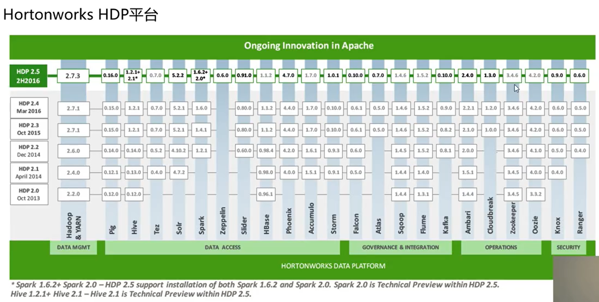
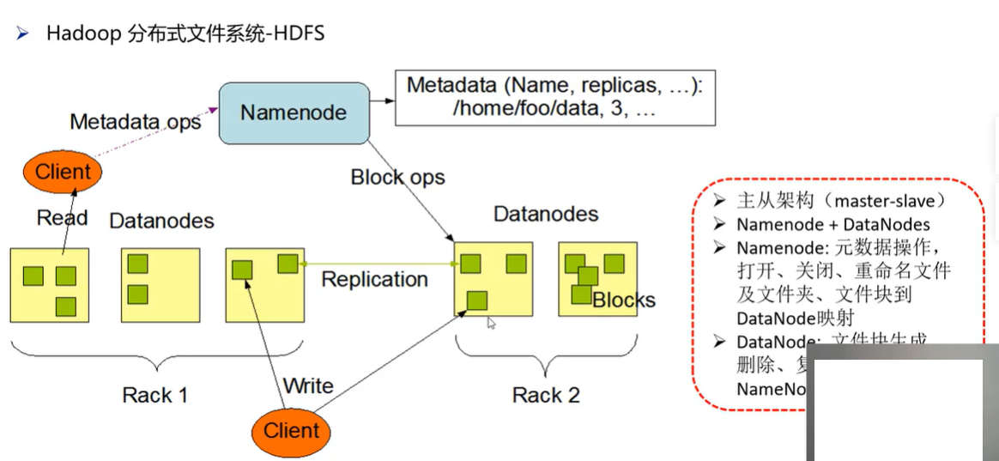
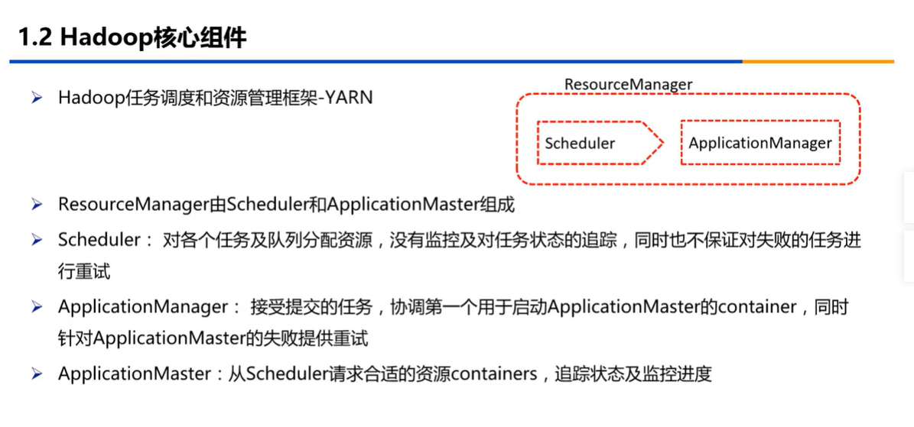
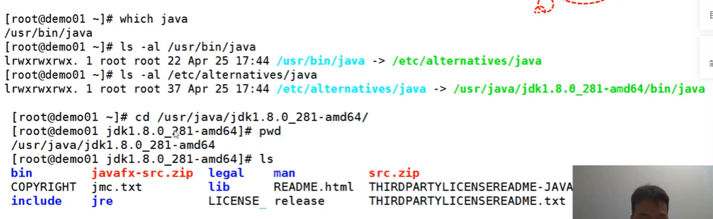
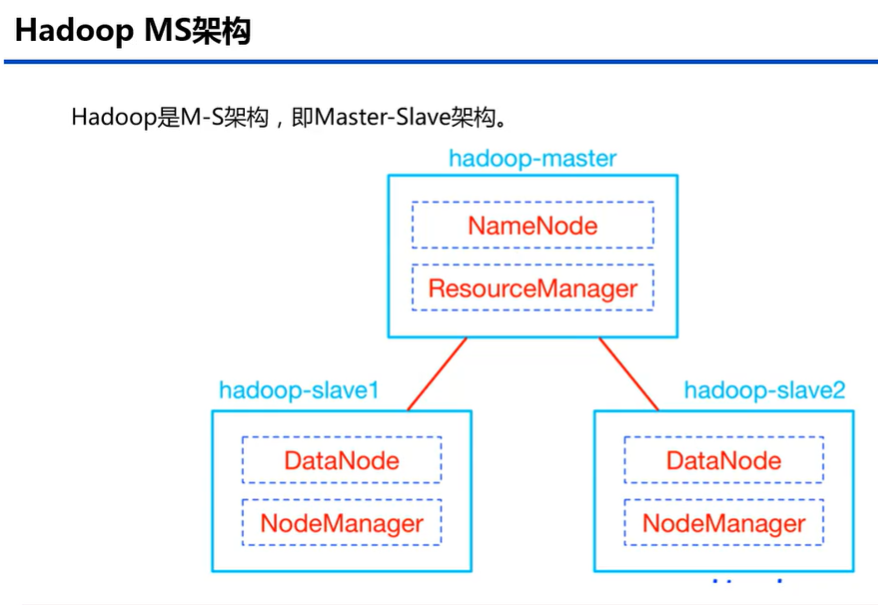
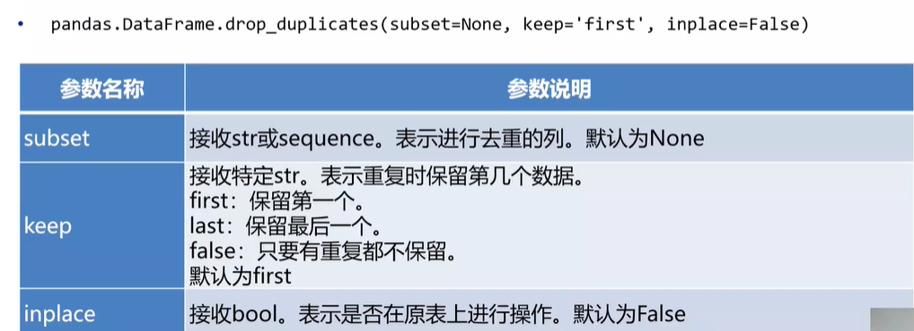
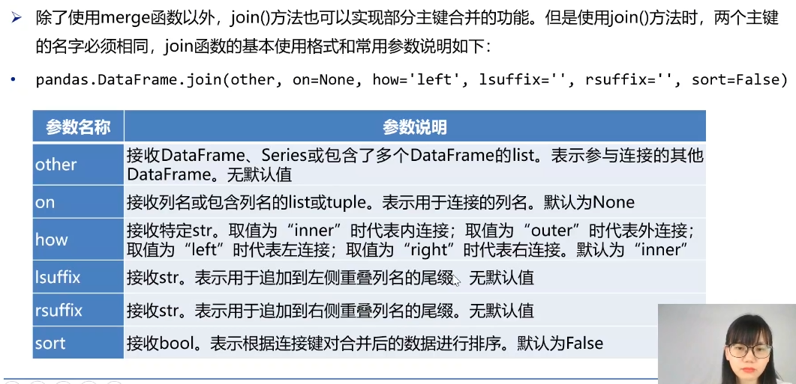
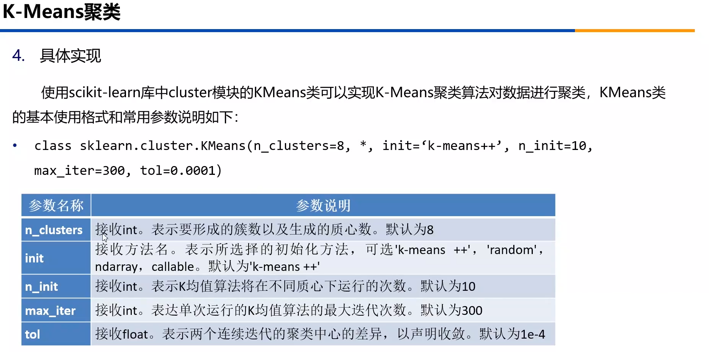

数字技术应用比赛
总时间7小时，上午到九点到下午四点
- Hadoop （预计：一小时）（配置文件==可以借鉴slave==中的配置）
- 数据标注（预计：一小时）
- 智能应用(数据可视化，预计时间两小时) 不会
- 智能训练(数据分析，预计两小时) 不会
- 剩余一小时检查
| 模块 | 评分比重 | 预计使用时间 |
|---|---|---|
| Hadoop部署 | 25分 | 一小时 |
| 数据标注 | 20分 | 一小时 |
| 智能训练 | 30分 | 两小时 |
| 智能应用 | 25分 | 两小时 |
尊敬的老师，你好！
现在情况是：
- 模块一 环境部署：能做出来一半多，原因：配置文件没背
- 模块二 数据标注：会做图片和文字的，(没问题)
- 模块三 智能训练：学了一下基础的模块，但是还是做不出来，而且有的题没有原数据（这个还得多敲代码）
- 模块四 智能应用：就是学了基本的库，但是没有实战经验，敲代码敲的少（关键给题不给数据）
总结：
模块三和模块四：最拉分的（==一点不会==）
模块一和模块二：简单的都会了，难的不会
一、Hadoop 介绍
1.1 认识大数据
==大数据==( Big data)或称**巨量数据、海量数据、大资料**，指的是所涉及的数据量规模巨大到无法通过人工或者计算机，在合理的时间内达到截取、管理、处理、并整理成为人类所能解读的形式的信息。
大数据（Big data）特征：
- Volumn: 容量，数据的大小
- Variety：种类，数据类型的种类(文本、音频、视频)
- Velocity： 速度，获取数据的速度
大数据流程

大数据应用

大数据平台
- 硬件平台
- openstack、amazon、阿里云计算
- 软件平台
- Hadoop、Spark等
Hadoop 已经成为处理大数据的行业标准！
Hadoop平台有那些？
- Apache Hadoop（开源免费原生，适合个人开发学习）
- Hadoop Distribution（发行版，打包的全家桶，收费）
- Big Data Suite（大数据套件，可以自定义开发各种定义，功能较多，面向企业，费用较高）
Hortonworks HDP 平台

1.2 Hadoop 核心模块
Hadoop 简介
Hadoop是Apache基金会旗下的一个开源的分布式计算平台，是基于Java语言开发的，有很好的跨平台特性，并且可以部署在廉价的计算机集群中。用户无需了解分布式底层细节，就可以开发分布式程序，充分利用集群的威力进行高速运算和存储。
- 可伸缩
- 分布式计算
- 容错
- 分布式存储
Hadoop核心组件
Module
- Hadoop Common(基础工具库用以支持其它模块)
- Hadoop Distributed File System（高可用的分布式文件存储系统）
- Hadoop YARN（任务调度和资源管理框架）
- Hadoop MapReduce（分布式编程模型）
- Hadoop Ozone（Hadoop 类存储模块）
Hadoop分布式文件系统 HDFS

文件块

三层文件系统
HDFS 在Linux 抽象出来的文件系统

Hadoop 任务调度和资源管理框架-YARN

Hadoop分布式编程模型-MapReduce
- MapReduce是Google提出的一个软件架构，用于大规模数据集(大于1TB)的并行运算。概念“Map(映)”和“Reduce(归纳)”，及他们的主要思想，都是从函数式编程语言借来的，还有从矢量编程语言借来的特性。
- 当前的软件实现是指定一个Map(映射)函数，用来把一组键值对映射成一组新的键值对，指定并发的Reduce(归纳)函数，用来保证所有映射的键值对中的每一个共享相同的键组。
(input) <k1, v1> -> map -> <k2, v2> -> combine -> <k2, v2> -> reduce -> <k3, v3> (output)

1.3 Hadoop 生态环境

Apache HBase架构
- HBase是一个分布式的、面向列的开源数据库，该技术来源于Chang et al所撰写的Google论文"Bigtable:一个结构化数据的分布式存储系统”
- 高可靠性、高性能、面向列、可伸缩
- HDFS为HBase提供高可靠底层存储支持
- MapReduce为HBase提供高性能计算能力
- Zookeeper为HBase提供稳定服务和failover机制
- 存储大量的数据(>TB)
- 需要很高的写吞吐量
- 大规模数据集很好性能的随机访问(按列)
- 需要进行优雅的数据扩展
- 结构化和半结构化的数据
- 不需要全部的关系数据库特性，例事务，连接等等

Apache Hive
- Hive是基于Hadoop的一个数据仓库工具
- 可以将结构化的数据文件映射为一张数据库表，并提供简单的sql查询功能，可以将sql语句转换为MapReduce任务进行运行
- 其优点是学习成本低，可以通过类==SQL语句==快速实现简单的**MapReduce**统计，不必开发专门的MapReduce应用，十分适合数据仓库的统计分析
- Hive定义了简单的类 SQL 查询语言，称为 HQL，它允许熟悉 SQL 的用户查询数据
- Hive 并不能够在大规模数据集上实现低延迟快速的査询，Hive 并不适合那些需要低延迟的应用，Hive 并不提供实时的查询和基于行级的数据更新操作
- Hive 不支持对数据的改写和添加，所有的数据都是在加载的时候确定的
- Hive 的最佳使用场合是大数据集的批处理作业，例如，网络日志分析

Apache Sqoop （把Hive的数据传输到MySQL）
- Sqoop是一款开源的工具，主要用于在Hadoop(Hive)与传统的数据库(mysql、postgresql…)间==进行数据的传递==，可以将一个关系型数据库(例如:MySQL,Oracle,Postgres等)中的数据导==进到Hadoop的HDFS中==，也可以将HDFS的数据导进到关系型数据库中
- 可以通过hadoop的mapreduce把数据从关系型数据库中导入数据到HDFS
- 类似于其他ETL工具，使用元数据模型来判断数据类型并在数据从数据源转移到Hadoop时确保类型安全的数据处理
- Sqoop专为大数据批量传输设计，能够分割数据集并创建Hadoop任务来处理每个区块

Apache Oozie（任务调度）
- Oozie是一个管理Hdoop作业(job)的工作流程调度管理系统。
- 它是一个开源工作流引擎，用于管理和协调运行在Hadoop平台上(包括:HDFS、Pig和MapReduce)的Jobs.
- 它围绕着两个核心进行:工作流(Workfow)和协调器(Coordinator)，前者定义任务拓扑和执行逻辑后者负责工作流的依赖和触发。
- ==Workflow==，即工作流，是一个有向无环图(DAG，Directed Acyclic Graph),描述了需要执行的 Actions序列。
汇总
- Flume:一种分布式的、可靠的、可用的服务，其用于高效地搜集、汇总移动大量日志数据。
- ZooKeeper:一种集中服务，其用于维护配置信息，命名，提供分布式同步，以及提供分组服务。
- Mahout:一种基于**Hadoop的机器学习和数据挖掘的分布式计算框架算法集，实现了多种MapReduce模式的数据挖掘算法**。
- Spark:一个开源的数据分析集群计算框架，最初由加州大学伯克利分校AMPLab开发，建立于HDFS之上。Spark与Hadoop一样，用于构建大规模、低延时的数据分析应用。Spark采用Scala语言实现，使用Scala作为应用框架。
- Storm：个分布式的、容错的实时计算系统，由BackType开发，后被Twitter捕获。Storm属于流处理平台，多用于实时计算并更新数据库Storm也可被用于“连续计算”(continuous computation)，对数据流做连续查询，在计算时就将结果以流的形式输出给用户。它还可被用于“分布式RPC”，以并行的方式运行昂贵的运算。
- Apache Flink是由Apache软件基金会开发的开源流处理框架，其核心是用Java和Scala编写的分布式流数据流引警。Flink以数据并行和流水线方式执行任意流数据程序，Flink的流水线运行时系统可以执行批处理和流处理程序。
- Ambari:一个供应、管理和监视Apache Hadoop集群的开源框架，它提供一个直观的操作工具和一个健壮的Hadoop API,可以隐藏复杂的Hadoop操作，使集群操作大大简化。
- Cloudera Manager:一个复杂的应用程序，用于部署、管理、监控您的 CDH 部署并诊断问题。Cloudera Manager 提供 Admin Console，这是一种基于 Web 的用户界面，使企业数据管理简单而直接。它还包括 Cloudera ManagerAPI，可用来获取群集运行状况信息和度量以及配置。
1.4 Hadoop 应用场景
适合场景
- 大数据量存储
- 海量计算
- 大量机器学习
- 大量搜索引擎
不适合 场景
- 实时流处理
- 图书馆系统
- 在线商城 (除非是非常大的数据量)
项目背景
- XXXX数据中心大数据处理平台项目存储技术，计划使用多种数据库技术构建。计划使用Hadoop技术的商业产品作为SybaselQ的前期大数据处理平台。
- 希望通过不同技术的组合，实现对大数据处理的高效、低成本。建设一个高性能、扩展性强、可靠性高运行稳定的大数据平台。
项目目标
- 整合企业全域范围内的大数据，采用统一的==元数据==模式进行数据管理
- 梳理出==一套大数据的指标==、标签数据体系，后续所有的新增数据都纳入在该统一数据体系下
- 开放式的数据集成体系，能够灵活支撑外部其它行业的大数据，采用==工具支撑自动化的数据采集流程==，避免手工脚本方式
- 开放式的数据计算体系，==灵活集成外部复杂的计算算法==，采用统一的计算模式，为应用提供需要的指标标签数据的自动化计算
- ==界面化==的计算作业流程配置方式，方灵活支撑各个应用的数据挖掘模型配置
项目规模
-
大数据平台的设计性能至少需要满足24小时内处理完当天的业务需求，避免数据积压。
-
预计需要采集的数据量6T/天，加工后的数据600G/天，存储周期90天。假设HDFS和HBase的复制因子为3。
-
计算下来后：
-
HDFS 需要的存储空间：6乘90乘3 = 1620TB
HBase 需要的存储空间：0.6乘90乘3 = 162TB
临时空间（10%）：178TB


二、完全分布式Hadoop集群搭建
2.1 安装虚拟机
操作系统
- 操作系统(operation system,简称OS)是管理计算机硬件与软件资源的计算机程序。操作系统需要处理如管理与配置内存、决定系统资源供需的优先次序、控制输入设备与输出设备、操作网络与管理文件系统等基本事务。
- 操作系统也提供一个让用户与系统交互的操作界面。
虚拟机
- 虚拟机(Virtual Machine)指通过软件模拟的具有完整硬件系统功能的、运行在一个完全隔离环境中的完整计算机系统。在实体计算机中能够完成的工作在虚拟机中都能够实现。
- 在计算机中创建虚拟机时，需要将实体机的部分硬盘和内存容量作为虚拟机的硬盘和内存容量。
- 每个虚拟机都有独立的CMOS、硬盘和操作系统，可以像使用实体机一样对虚拟机进行操作。
- 使用所需的操作系统
- 可以虚拟多个虚拟机（集群）
- 虚拟机之间相互独立
首先安装 VM，准备CentOS 7安装包
要考虑的配置
- Host Name
- 内存
- CPU
- 硬盘
- 安装模式（Hadoop 不需要其它的配置，可以使用最小安装）
安装向导
- 虚拟机名称、位置、
- 最大磁盘大小、将虚拟磁盘拆分成多个文件
- 选择时间、最小化安装
- 安装位置
- 网络开启（网络名称）
重点：==配置虚拟网络==

教程上教的是：语言：English、最小安装、时期上海、磁盘、网络
Host name: demo10.centos.com
2.2安装Java
JDK & 开发工具
- JDK(Java Development Kit)称为Java开发包或Java开发工具，是一个编写Java的Applet小程序和应用程序的程序开发环境。
- JDK是整个Java的核心，包括了Java运行环境(Java Runtime Environment)，一些Java工具和Java的核心类库(Java API)。
检测是否安装Java
安装java
tar -zvxf jdk-8u171-linux-x64.tar.gz -C 解压路径测试Java
上传文件，解压，
配置环境变量
-
编辑 /etc/profile 文件
1
2
3
4vim /etc/profile
# 文件末尾增加
export JAVA_HOME=/opt/server/jdk1.8.0_131
export PATH=${JAVA_HOME}/bin:$PATH -
执行source命令，使配置立即生效
source /etc/profile -
检查是否安装成功
-
java -version
*.rpm 安装
rpm -ivh jdk-8u171-linux-x64.rpm
配置JAVA_HOME,添加环境变量

1 | vim /etc/profile |
2.3Hadoop集群部署模式
Hadoop的安装部署的模式一共有三种:
==独立模式==(本地模式)standalone
默认的模式，无需运行任何守护进程(daemon)，所有程序都在单个M上执行。由于在本机模式下测试和调试MapReduce程序较为方便，因此，这种模式适宜用在开发阶段。使用本地文件系统，而不是分布式文件系统。
==伪分布模式== pseudo distributed
在一台主机模拟多主机。即Hadoop的守护程序在本地计算机上运行，模拟集群环境，并且是相互独立的Java进程。在单机模式之上增加了代码调试功能，允许检査内存使用情况，HDFS输入输出，以及其他的守护进程交互。类似于完全分布式模式，因此，这种模式常用来开发测试Hadoop程序的执行是否正确。
==完全分布模式==fulldistributed,Hadoop
完全分布模式的守护进程运行在由多台主机搭建的集群上，是真正的生产环境

克隆虚拟机
虚拟机克隆分为“完整克隆”(Full Clone)和“链接克隆”(Linked Clone)两种方式：
- 完全克隆的虚拟机不依赖源虚拟机，是完全独立的虚拟机，它的性能与被克隆虚拟机相同。
- 链接克隆(LinkedClone)依赖于源虚拟机(称为父虚拟机)由于链接克隆是通过父虚拟机的快照创建而成，因此节省了磁盘空间，而且克隆**速度非常快，但是克隆后的虚拟机性能会有所下降**。
克隆机器名仍是被克隆的机器名
1 | [root /]# hostname |
2.4配置固定IP

- 配置静态IP地址
vi /etc/sysconfig/network-scripts/ifcfg-ens33
1 | BOOTPROTO="static" |
-
重启网络
-
service network restart -
修改网络名字
-
vi /etc/hosts -
192.168.80.134 master master.centos.com127.0.0.1 localhost localhost.localdomain localhost4 localhost4.localdomain4 ::1 localhost localhost.localdomain localhost6 localhost6.localdomain61
2
3
4
5
6
7
8
9
10
11
12
13
14
15
16
17
18
19
20
21
22
23
24
25
26
27
28

虚拟机集群
克隆后输入指令
```shell
hostnamectl set-hostname node1.centos.com
vi /etc/sysconfig/network-scripts/ifcfg-ens33
BOOTPROTO="static"
# 下面添加内容
IPADDR=192.168.100.128
NETMASK=255.255.255.0
GATEWAY=192.168.100.2
DNS1=192.168.100.2
# 重启网络命令
service network restart
# 检查
ip addr
hostname
在mater里面配置一些
1 | vi /etc/hosts |

2.5 SSH 无密码登录
- SSH为Secure Shell 的缩写，由IETF的网络小组(Network Working Group)所制定;SSH 为建立在应用层基础上的安全协议。
- SSH 是较可靠，专为远程登录会话和其他网络服务提供安全性的协议。利用SSH 协议可以有效防止远程管理过程中的信息泄露问题。
- SSH最初是UNIX系统上的一个程序，后来又迅速扩展到其他操作平台。几乎所有UNIX平台一包括HP-UX、Linux、AIX、Solaris、Digital UNIX、lrix，以及其他平台，都可运行SSH。
SSH 验证方式
- 从客户端来看，SSH提供两种级别的安全验证:
- 第一种级别(基于口令的安全验证)
- 需要帐号和口令，就可以登录到远程主机。所有传输的数据都会被加密，但是不能保证正在连接的服务器就是你想连接的服务器。可能会有别的服务器在冒充真正的服务器，也就是受到“中间人”这种方式的攻击。
- 第二种级别(基于密匙的安全验证)
- 需要依靠密匙，也就是必须创建一对密匙，并把公用密匙放在需要访问的服务器上。如果要连接到SSH服务器上，客户端软件就会向服务器发出请求，请求用密匙进行安全验证。服务器收到请求之后，先在该服务器上的主目录下寻找公用密匙，然后把它和发送过来的公用密匙进行比较。如果两个密匙一致，服务器就用公用密匙加密“质询”(challenge)并把它发送给客户端软件。客户端软件收到“质询”之后就可以用私人密匙解密再把它发送给服务器。

依此对node1、node2、node3进行无密码登录配置
1 | # 登录节点 |
2.6配置 Hadoop 集群
Hadoop集群安装采用下面步骤:
- 在Master节点：上传并解压Hadoop安装包。
- 在Master节点：配置Hadoop所需configuration配置文件。
- 在Master节点：拷贝配置好的Hadoop安装包到其他节点。
- 在所有节点：创建数据存储目录。
- 在Master节点：执行HDFS格式化操作。

df-h 查看当前空间的占用
配置文件，core-site
cd /opt/hadoop-3.1.0/etc/hadoop/
vi hadoop-env.sh
export JAVA_HOME=/software/jdk1.8.0_171

1 | <!-- core-site.xml 地址:/opt/hadoop-3.1.0/etc/hadoop/ --> |

1 | <!-- mapred-site.xml --> |
配置完毕，拷贝Hadoop安装包

这时候可以使用多个终端同时进行复制
1 | cd /opt/ |
创建数据目录

1 | mkdir -p /data/hadoop/tmp |
格式化HDFS
1 | # 这行命令是在 hadoop 下的bin目录中执行(master) |
2.7 Hadoop 集群配置参数

2.8 Hadoop 集群启动与监控

Hadoop集群启动报错及解决

1 | # vim /opt/hadoop-3.1.0/etc/hadoop/hadoop-env.sh |
1 | # 然后把文件拷贝到子节点中 |
拷贝完以后启动,进入到sbin输入 ./start-dfs.sh
启动完成以后,可以通过jps来查看进程
1 | # 这是在 master 上面 |
进入到sbin,启动yarm./start-yarn.sh
1 | # 这样的话就会启动 resourcemanager |
- master: 8020
- 监控 8088
- 监控 19888
- 50070
- ==需要关闭防火墙==子节点也需要关闭
三、数据探索
- 数据校验
- 数据特征分析
3.1.1 一致性校验
字段信息校验
- 时间校验
- 时间范围不一致
- 时间颗粒不一致（数据采集的频率
- 时间格式不一致
- 时区不一致（海外服务器，设置时区
- 字段信息校验
- 同名异议（字段名冲突，比如货物编号、订单编号）
- 异名同义
- 单位不统一（比如人民币跟美元）
3.1.2缺失值校验
-
缺失值产生的原因
- 信息遗漏
- 属性值不存在
- 信息暂时无法获取或获取信息的代价太大
-
缺失值产生的影响
- 丢失大量有用信息
- 不确定性更加显著，模型中蕴涵的规律更难把握
- 使建模过程陷入混乱，导致不可靠的输出
-
缺失值的校验
函数或方法名 函数或方法功能 使用格式 isnull 用于判断是否为空值 pandas.DataFrame.isnull()或pandas.isnull(obj)notnull 用于判断是否为非空值 pandas.DataFrame.notnull()或pandas.notnull(obj)count 用于计算非空元素 pandas.DataFrame.count(axis=0,level=None,numeric only=False)
3.1.3简单统计量分析
异常值校验
-
简单统计量分析
可以先对变量做一个描述性统计分析，进而查看哪些数据是不合理的。Python==异常值==检测函数或方法
比如果年龄数据记录的199岁,那么明显是偏离实际的
或者身高3米之类的
使用的是
numpy库
| 函数或方法名 | 函数或方法功能 | 使用格式 |
|---|---|---|
| percentile | 用于计算==百分位数== | numpy.percentile(a,q,axis=None,out=None,overwrite input=Fase,interpolation='linear,keepdims=False) |
| mean | 用于计算==平均值== | pandas.DataFrame.mean(axis=None,skipna=None,level=Nonenumeric only=None,**kwargs) |
| std | 用于计算==标准差== | pandas.DataFrame.std(axis=None,skipna=None,level=None,ddof=1,numeric only=None,**kwargs) |

以上就是异常值检测常用的函数
3.1.3 IQR 准则和3西塔原则

IQR准则
1 | import numpy as np |
3sigma 原则
1 | import numpy as np |
3.1.3箱形图分析
通过可视化来检测异常值

下面是代码
1 | import pandas as pd |
3.2.1 集中趋势度量

3.2.1 离中趋势度量

- pandas库的==describe==()方法可以给出一些基本的统计量，包括==均值、标准差、最大值、最小值、分位==数等。describe()方法的基本使用格式及参数说明如下:
pandas.DataFrame.describe(percentiles=None, include=None, exclude=None, datetime_is_numeric-False)
| 参数名称 | 参数说明 |
|---|---|
| percentiles | 接收int。表示要包含在输出中的百分比，须介于0~1。默认为None |
| include | 接收类似dtype的列表。表示**包括**在结果中的数据类型的白名单。默认为None |
| exclude | 接收类似dtype的列表型。表示从结果中**忽略**的数据类型黑名单。默认为None |
| datetime_is_numeric | 接收bool。表示是否将datetime dtype**s视为数字**。默认为False |
下面是代码
1 | import pandas as pd |
3.2.2定量数据分布分析

1 | import pand as pd |
3.2.2定向数据分布分析

- 这集用的是
matplotlib,因没有数据,就先不做了
3.2.3对比分析
- 对比分析是指将两个相互联系的指标进行比较,从数量上展示和说明研究对象模型的大小、水平的高低、速度的快慢、以及各种关系是否协调，适用于指标间的横纵向比较、时间序列的比较分析。
- 对比分析主要有以下两种形式：
- ==绝对数比较==
- 绝对数比较是利用绝对数进行比较，从而寻找差异的一种方法
- ==相对数比较==
- 用于反义客观现象之间数量联系程度的综合指标
相对数比较可以分为以下几种：

使用不同部门的销售额来进行对比
1 | import pandas as pd |

3.2.4周期分析
- 周期分析是探索某个变量是否随着时间变化而呈现出某种周期变化趋势.
- 以某景区2019年3月份人流量为例,根据人流量数据,绘制时序图,并分析景区人流量的变化趋势

3.2.5贡献度分析
贡献度分析又称巴累托分析，贡献度分析的原理是帕累托法则，又称20/80定律。
以服装企业为例子，根据企业对应的秋装盈利数据，绘制服装盈利帕累托图。


3.2.6相关性分析
直接绘制散点图

绘制散点图矩阵

计算相关性数据（经常用到）


（有点难，先跳过）
四、数据预处理
- 数据清洗
- 记录重复
- 数据交换
- 数据合并
4.1.1 数据清洗-记录重复
记录重复是指数据中一个或多个记录的属性的值完全相同。
在某企业的母婴发货记录表中，利用列表(list)对用品名称去重，查看所有的品牌名称
def delRep(list1): list2 =[] for i in list1: if i not in list2: list2.append(i) return list2 names = list(data['品牌名称'])# 提取品牌名称 name = delRep(names)#使用自定义的去重函数去重
2
3
4
5
6
7
- 除了利用列表去重之外,还可以使用(set)元素为唯一的特性去重
- ```python
print("去重前品牌总数为:", len(names))
name_set = set(names) # 利用set的特性去重
print("去重后品牌总数为:",len(name_set))==重点: 用的最多==的还是
pandas提供的drop_duplicates的去重方法.该方法只对DataFrame 或 Series类型有效.
drop_duplicates()方法的基本使用格式和参数说明如下
pandas.DataFrame.drop_duplicates(subset=Node, keep='first', inplace=False)
去重演示:
1 | # 方法一,直接去重 |
4.1.2 数据清洗-属性内容重复
属性内容重复是指数据中存在一个或多个属性名称不同，但数据完全相同。当需要去除连续型属性重复时，可以利用属性间的相似度，去除两个相似度为1的属性的其中一个：
# 方法一:(对数据型类型进行计算) corr_ = data[['品牌标签','仓库标签']].corr(method='kendall') print('kendall相似度: \n', corr_) ''' corr 中的参数 最主要的是: method参数 pearson 计算连续值的属性,之间的相似度(默认) kendall 主要是针对离散型的属性,之间的相似度 spearman 针对非线性的属性 '''
2
3
4
5
6
7
8
9
10
11
12
- 除了使用相似度矩阵进行属性去重之外，可以通过`pandas`库的`DataFrame.equals()`方法进行属性去重
- `DataFrame.equals(other)`方法的基本使用格式和参数说明如下:
- | 参数名称 | 参数说明 |
| -------- | ------------------------------------------------------------ |
| other | 接收Series或DataFrame。表示要与第一个进行比较的另一个Series或DataFrame.无默认值 |
- ```python
# 对于列别型的(只会返回True and False)
data['品牌标签'].equals(data['仓库标签']) # False
4.1.3 数据清洗-缺失值&异常值处理
缺失值处理
- 处理缺失值的方法可分为3类:不处理，删除记录和数据插补。
- 在数据分析中常用的插补方法处理缺失值:
| 插补可方法 | 方法描述 |
|---|---|
| 平均数/中位数/众数插补 | 根据属性值的类型，用该属性取值的平均数/中位数/众数进行插补 |
| 使用固定值 | 将缺失的属性值用一个常量替换 |
| 最近临插补 | 在记录中找到与缺失样本最接近的样本的该属性值插补 |
| 回归方法 | 对带有缺失值的变量，根据已有数据和与其有关的其他变量(因变量)的数据建立拟合模型来预测缺失的属性值 |
| 插值法 | 插值法是利用已知点建立合适的插值函数/(x)，未知值由对应点x,求出的函数值/(x)近似代替 |
拉格朗日插值法

牛顿插值法

代码演示
import pandas as pd # scipy 库 里面有个 拉格朗日函数 from scipy.interpolate import lagrange # 比如数据有两列,一个是日期,一个是销售额 k = 5 for i in data.columns: for j in range(len(data)): if(data[i].isnull())[j]: # print('缺失值所在的列: ',i) # print('缺失值所在的行索引位置: ',j) # 获取前后 k 个数据,这个就是空值的前后5个数据,前五个是(0~3),后五(5~9) y = data[i].reindex(list(range(j-k,j)) + list(range(j+1,j+1+k))) y = y[y.notnull()] # 删除空值的数据 print(y) # 拉格朗日进行计算出中间的空值 lglr = lagrange(y.index,list(y))(j) print(lglr)# 比如数据有两列,一个是日期,一个是销售额
2
3
4
5
6
7
8
9
10
11
12
13
14
15
16
17
- 代码优化,使用函数进行
- ```python
import pandas as pd
# scipy 库 里面有个 拉格朗日函数
from scipy.interpolate import lagrange
def inter(da,n,k=5):
"""
n: 是缺失值所在是行索引位置,相当于上个里面的 j
"""
# 获取前后 k 个数据,这个就是空值的前后5个数据,前五个是(0~3),后五(5~9)
y = da.reindex(list(range(n-k,n)) + list(range(n+1,n+1+k)))
y = y[y.notnull()] # 删除空值的数据
# 拉格朗日进行计算出中间的空值
return lagrange(y.index,list(y))(n)
2
3
4
5
6
for i in data.columns:
for i in range(len(data)):
if(data[i].isnull())[j]:
sales = inter(data[i],j) # 这里直接调用函数就可以了
print(sales)
异常值处理
在数据预处理时，异常值是否剔除，需视具体情况而定，因为有些异常值可能蕴含着有用的信息。异常值处理常用方法如下:
异常值处理方法 方法描述 删除含有异常值的记录 直接将含有异常值的记录删除 视为缺失值 将异常值视为缺失值，利用缺失值处理的方法进行处理 平均值修正 可用前后两个观测值的平均值修正该异常值 不处理 直接在具有异常值的数据集上进行分析建模
4.2.1 数据标准化
简单函数转换

最小最大标准化

1 | import pandas as pd |
零均值标准化

1 | # (x - x的均值) / 方差, mean均值,std方差 |
小数定标标准化

1 | import numpy as np |
4.2.2 数据离散化-等宽法
- 分类算法(类别型,连续型)
1.离散化的过程
- 确定分类数
- 设定离散划分点
- 用不同符号代表落在每个子区间的数据值
2.常用的离散化的方法
- ==等宽法==: 等宽法将属性的值域分成具有相同宽度的区间，区间的个数由数据本身的特点决定或由用户指定
- ==等频法==: 等频法将相同数量的记录放进每个区间
- ==聚类==: 首先将连续属性的值用聚类算法进行聚类，然后再将聚类得到的簇进行处理，合并到一个簇的连续属性值做同一标记
==等宽法==:代码演示
1 | import numpy as np |
4.2.3 数据离散化-等频法
等频法将相同数量的记录放进每个区间
1 | # min, 1/4, 2/4, 3/4, max 作为划分点 |
还有个简单的方法
pd.qcut
1 | # qcut 会自动获取分位数(min, 1/4, 2/4, 3/4, max),然后进行计算 |
4.2.4 数据离散化-聚类
- 首先开始聚类，然后回去聚类的中心
- 聚类中心其实就是对于这个数据的样本，个各类平均的值
- 划分点怎么取：相邻的两个聚类中心的平均值作为划分点
- 开始写代码
1 | from sklearn.cluster import KMeans |
-
使用
data.ndim来查看是一维还是二维 -
使用
model.cluster_centers_来查看聚类中心 -
借用滚动求平均
-
# 转换为 DataFrame , sort_values是pandas里的排序方法,安装第0个数据进行排序,默认是升序(先进行排序,然后再滚动求平均) c = pd.DataFrame(model.cluster_centers_).sort_values(0) # 用两个两个的方法来进行滚动求平均 c = c.rolling(2).mean() c = c.dropna() w = [0] + list(c[0])+[data.max()] print('聚类结果统计：\n', pd.cut(data,w,lable=range(k)).value_counts())1
2
3
4
5
6
7
- 可以用可视化进行展示
- ```
import matplotlib.pyplot as plt
x = data[d3==0]
4.2.5 独热编码
- 独热编码即One-Hot编码，又称一位有效编码，是处理类型数据较好的方法，主要是使用N位状态寄存器对于N个状态进行编码，每个状态都有它独特的寄存器位，并且在任意时候都有只有一个编码位有效。
- 独热编码的==优点==：
- 将离散型属性的取值扩展到欧氏空间，离散型属性的某个取值就对应欧氏空间的某个点。
- 对离散型属性使用独热编码，可以让属性之间的距离计算更合理

-
在python中使用
scikit-learn库中preprocessing模块的OneHotEncoder函数进行独热编码，该函数的基本格式如下： -
class sklearn.preprocessing.OneHotEncoder(n_values='auto',categorial_features='all', dtype<class 'numpy.float64'>,sparse=True)1
2
3
4
5
6
7
8
9
10
11
12
13
14
15
16
- | 参数名称 | 参数说明 |
| -------------------- | ------------------------------------------------------------ |
| n_values | 接受int或array of ints。表示每个功能的值数。默认位auto |
| categorical_features | 接受all或array of indices或mask。表示哪些功能视为分类功能，默认为all |
| spares | 接受boolean。表示返回是稀疏矩阵还是数组。默认为True |
| handle_unknown | 接受str。表示在转换过程中引发错误还是忽略是否存在未知的分类特征。默认为error |
```py
import sklearn.preprocessing import OneHotEncoder
data = [[0,0,3],[1,1,0],[1,0,1],[0,2,2]]
# print(np.array(data).shape)
en=OneHotEncoder().fit(data) # 训练
en.transform([[0,0,0]]).toarray()
en.transform([[0,1,2]]).toarray()
4.3 数据合并
4.3.1 堆叠合并
堆叠合并也称 多表合并（==横向堆叠==、==纵向堆叠==）
左右进行合并

上下进行合并

- 使用pandas库的concat函数可以实现横向堆叠和纵向堆叠，concat函数的基本使用格式和常用参数说明如下：
pandas.concat(objs,axis=0,join='outer',join_axes=None,ignore_index=False,keys=None,levels=None,names=None,verify_integrity=False,copy=True)
| 参数名称 | 参数说明 |
|---|---|
| objs | 接受多个Series、DataFrame、Panel的组合。表示参与连接的pandas对象的列表的组合。无默认值 |
| axis | 接受0或1.表示连接的轴向，默认为0（纵向） |
| join | 接受inner或outer。表示其它轴向上的索引是按交集（inner）还是并集（outer）进行合并。默认为outer |
1 | import pandas as pd |
也可以使用
append方法进行纵向合并
1 | d3.append(d4) # 纵向合并(有个前提要求是属性要是一样的) |
4.3.2 主键合并
主键合并，即通过一个或多个键将两个数据集的行连接起来。

- pandas库中的merge函数和join()方法都可以实现主键合并，但两者的实现方式并不相同。merge函数的基本使用格式和常用参数说明如下:
pandas.merge(left, right,how='inner',on=None, left_on=None, right_on=None,left_index=False,right_index=False,sort=False, suffixes=('_x','_y')，copy=True,indicator=False)
| 参数名称 | 参数说明 |
|---|---|
| left | 接收DataFrame或Series。表示要添加的新数据1。无默认值 |
| right | 接收DataFrame或Series。表示要添加的新数据2。无默认值 |
| how | 接收inner、outer、left、right。表示数据的连接方式。默认为inner |
| on | 接收str或sequence。表示两个数据合并的主键(必须一致)。默认为None |
| left_on | 接收str或sequence。表示left参数接收数据用于合并的主键。默认为None |
| right_on | 接收str或sequence。表示right参数接收数据用于合并的主键。默认为Non |
| sort | 接收bool。表示是否根据连接键对合并后的数据进行排序。默认为False |

使用python操作
1 | # merge 函数实现主键合并 |
4.3.3 重叠合并

1 | # 使用函数 pd.DataFrame.combine_first() |
4.3.4 分组聚合-groupby方法


1 | # pandas.DataFrame.groupby() |
4.3.5 分组聚合-agg方法

1 | meal[['counts','amounts']].agg(np.sum, axis=0) |
4.3.6 分组聚合-apply和transform方法


1 | # apply 方法 |
总结.
- 本章介绍了数据预处理的数据清洗、数据变换和数据合并3个主要任务。
- 数据清洗主要介绍了对重复值、缺失值和异常值的处理。
- 数据变换介绍了如何从不同的应用角度对已有属性进行简单的函数变换、数据标准化、数据离散化和独热编码。
- 数据合并主要介绍了多表合并和分组聚合。
第5模块: 数据挖掘算法基础
- 分类与回归
- 聚类
- 关联规则
- 智能推荐
- 时间序列


5.0 构建线性回归模型


获取数据
1 | import pandas as pd |
训练集与测试集分割(==划分数据==)
1 | x = data.loc[:,'x1':'x13'] # 获取前13列 x1是列名,获取属性 |
train_test_split该函数返回一个元组(X_train, X_test, y_train, y_test)，其中X_train表示训练集的特征数据，X_test表示测试集的特征数据，y_train表示训练集的标签数据，y_test表示测试集的标签数据。
开始训练线性回归模型
LinearRegression==模型训练==
1 | from sklearn.linear_model import LinearRegression |
那么模型的效果到底如何呢
==模型评估==.
1 | from sklearn.metrics import explained_variance_score,r2_score |
返回的是0~1之间的,越接近1效果越好，相反0就是效果不好
5.1 构建逻辑回归模型

逻辑回归模型的建模步骤
- 根据分析目的的设置因变量和自变量，并进行属性筛选
- 列出线性回归系数
- 模型校验
- 模型预测

代码演示
1 | # 获取数据 |
5.2 构建决策树模型


算法


Code
1 | import pandas as pd |
5.3 构建KNN模型
一种常见的监督学习的方法.
确定预测样本类别：
- 投票法
- 平均法

1 | # 获取数据 |
5.4 构建非线性支持向量机

1 | # 获取数据 |
5.5 构建神经网络模型


1 | # 获取数据 |
5.6.1 集成算法
Bagging

Booting

Stacking

1 | # 数据获取 |
5.7.1 Kmeans聚类算法原理


5.7.2 kmeans聚类算法实现
1 | # 读取数据 |
5.7 密度聚类算法